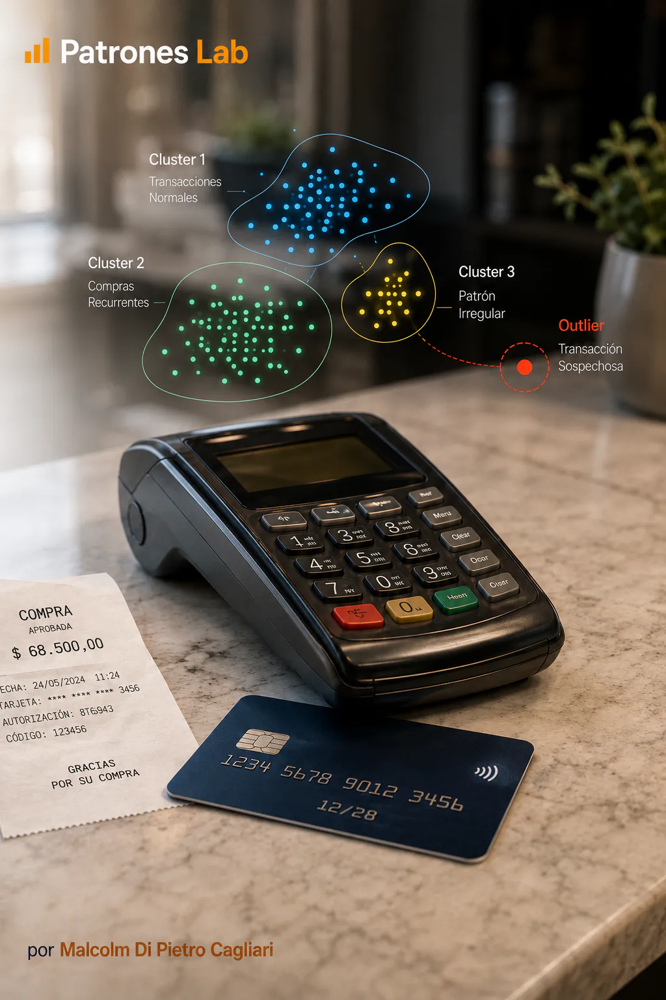
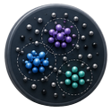

MACHINE LEARNING · PROGETTO 08

Progetto 10 · Machine Learning
Modello Machine Learning · Frode con DBSCAN
Clustering non supervisionato con DBSCAN per identificare possibili frodi con carta di credito.

CONTESTO E OBIETTIVO
Rilevare gruppi densi e osservazioni atipiche che possano funzionare come segnali esplorativi di frode.
DATI E DIAGNOSI
- Si usa DBSCAN per identificare densità e punti isolati senza fissare prima il numero di cluster.
- Si valutano pattern atipici e separazione di segmenti transazionali.
- Il risultato viene letto come strumento esplorativo, non come diagnosi definitiva di frode.
CONSEGNA E APPRENDIMENTO
La consegna documenta un’alternativa non supervisionata basata sulla densità per integrare altri approcci di rilevazione della frode.